Fret Not, It's Curve Fitting All The Way Down!

"epiphanies in Bayes-land"
Eric J. Ma, Digility 2018
Follow Along!
ericmjl.github.io/ curve-fitting-talk
About Myself
- Investigator, Scientific Data Analysis, NIBR
- MIT Biological Engineering, ScD, 2017
- Self-taught machine & deep learner, Bayesian Pythonista
Goals
- Demystify basic concepts in Bayesian statistical inference, using lots of pictures and minimal equations.
- Show how Bayesian methods can help you design more reasonably.
Estimation


import numpy as np
import pymc3 as pm
data = np.random.normal(loc=6, sd=2, size=1000)
with pm.Model() as model:
# Priors
sd = pm.Exponential('sd', lam=5)
mu = pm.Normal('mu', mu=0, sd=100)
# Likelihood for data
like = pm.Normal('like', mu=mu, sd=sd, observed=data)
Linear Regression
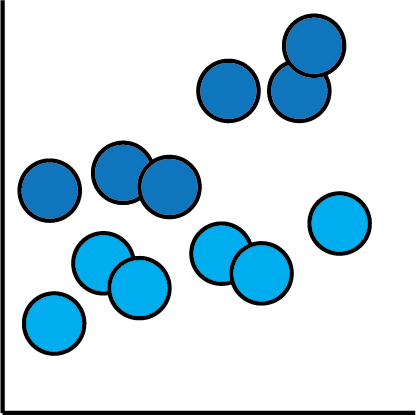 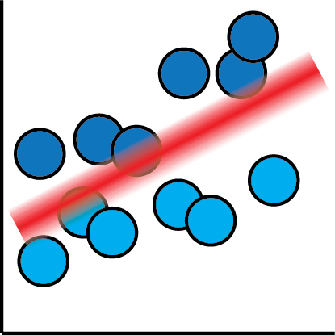
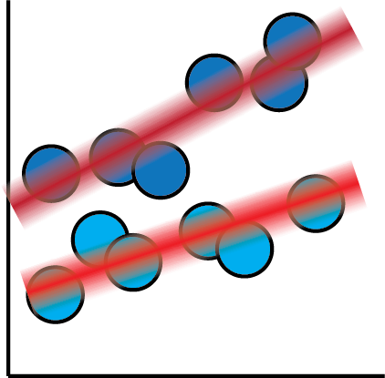
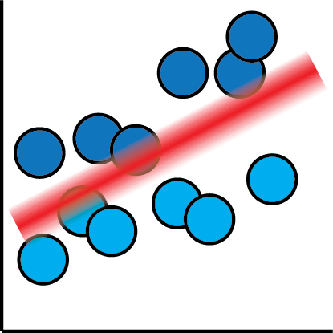
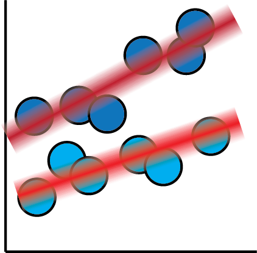
import pymc3 as pm
import numpy as np
x = np.random.normal(loc=0, sd=10, size=1000)
m = 10; c = 6;
y = m * x + c + np.random.normal(0, 0.2)
with pm.Model() as model:
# Priors
m = pm.Normal('m', loc=0, sd=100)
c = pm.Normal('c', loc=0, sd=100)
sd = pm.Exponential('sd', lam=5)
# Link function
mu = m * x + c
# Likelihood for data
like = pm.Normal('like', mu=mu, sd=sd, observed=y)
Logistic regression

 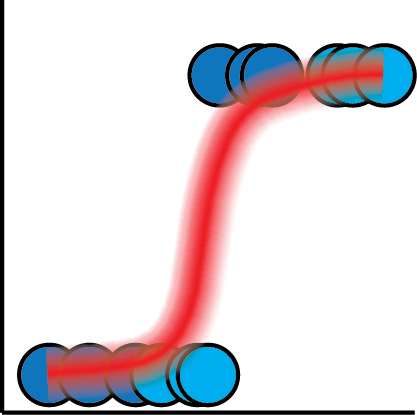
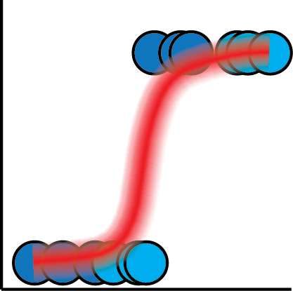

import pymc3 as pm
import numpy as np
with pm.Model() as model:
# Priors
beta = pm.Normal('beta', mu=0, sd=100)
# Link function
p = 1 / (1 + beta * x)
# Likelihood for data
like = pm.Bernoulli('like', p=p, observed=data)
Parametric Curves

 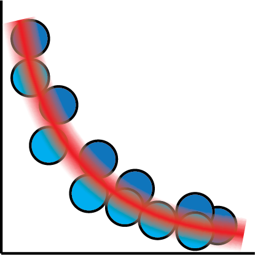
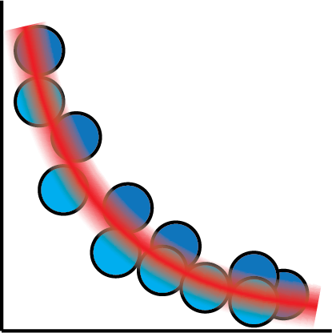

import pymc3 as pm
import numpy as np
with pm.Model() as model:
# Priors
A = pm.HalfNormal('A', sd=100)
b = pm.Normal('b', mu=0, sd=100)
C = pm.HalfNormal('C', sd=100)
sd = pm.Exponential('sd', lam=5)
# Link function
mu = A * tt.exp(-b * x) + C
# Likelihood for data
like = pm.Normal('like', mu=mu, lam=lam, observed=data)
Neural Networks
 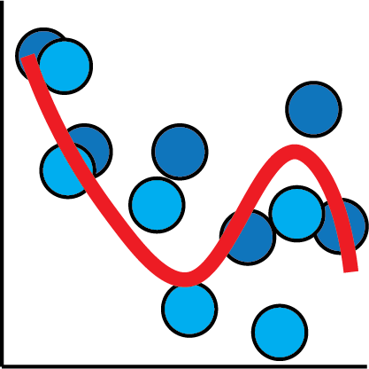
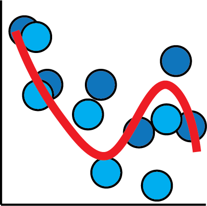


def nn(x):
w1 = pm.Normal('w1', mu=0, sd=1, shape=(x.shape[1], x.shape[1]))
b1 = pm.Normal('b1', mu=0, sd=1, shape=(x.shape[1]))
a1 = tt.tanh(tt.dot(x, w1) + b1)
w2 = pm.Normal('w2', mu=0, sd=1, shape=(x.shape[1], 1))
b2 = pm.Normal('b2', mu=0, sd=1, shape=(1,))
a2 = tt.tanh(tt.dot(a1, w2) + b2)
return a2
with pm.Model() as model:
mu = nn(x)
sd = pm.Exponential('sd', lam=5)
like = pm.Normal('like', mu=mu, sd=sd, observed=data)
But what exactly is a neural network?
Deep neural networks are nothing more than matrix transformations on input data.
They are nothing more than fancy curve fitters!
For more details and pretty pictures, check out another talk I did at PyData NYC 2017!
How can Bayesian methods can help you design more reasonably?
By "reasonably", we mean "in a way that doesn't violate common statistical sense".
How do we quantify ice hockey goaltender performance?
| ID | Goals Against | Goals Saved | Save Percentage |
|---|---|---|---|
| Jake Allen | 1614 | 1462 | 0.906 |
| Dylan Ferguson | 2 | 1 | 0.500 |
| Scott Foster | 7 | 7 | 1.000 |
Who is the better goalie?
Each player is estimated independently.
beta distribution tells us how uncertain we are about a probability parameter.
binomial distribution gives us the likelihood function for the data.
with pm.Model() as nopool:
n_players = len(df)
p = pm.Beta('p', alpha=1, beta=1, shape=(n_players,))
like = pm.Binomial('likelihood',
n=df['SA'],
p=p,
observed=df['SV'])
Is Dylan Ferguson really that bad?
Let's try again
beta distribution: α is "number of successes", while β is "number of failures.
hyperpriors: φ is a "population" success probability, while κ models total number of data points.
Expresses that players follow a population distribution.
with pm.Model() as pool:
n_players = len(df)
phi = pm.Uniform('phi', lower=0.0, upper=1.0)
kappa_log = pm.Exponential('kappa_log', lam=1.5)
kappa = pm.Deterministic('kappa', tt.exp(kappa_log))
p = pm.Beta('p', alpha=phi*kappa,
beta=(1.0-phi)*kappa,
shape=(n_players,))
like = pm.Binomial('likelihood',
n=df['SA'],
p=p,
observed=df['SV'])
We believe that players without much data should be considered average, but with high uncertainty.
With Bayesian partial pooling, we can impose reasonable prior knowledge about players on the modelling procedure.
Some pointers
- Average user: won't parse raw numbers well.
- Models should incorporate reasonable prior information.
- Uncertainty expresses confidence.
Epiphanies in Bayes-land
Bayesian methods can help us design more reasonably.
Fret not, it's curve fitting...
...all the way down! 😄